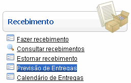
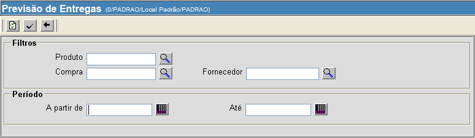
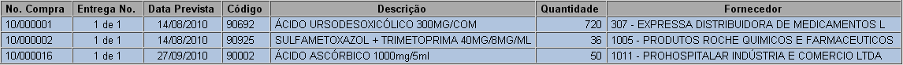

Previsão de Entregas [ Voltar ]
Este formulário permite a
visualização da programação de entregas para ordens de compra
aguardando recebimento. São exibidas entregas não-recebidas e recebidas
parcialmente. A previsão pode filtrar entregas por
produto, compra, fornecedor e/ou por um período.
O formulário "Previsão das Entregas"
encontra-se dentro do menu "Recebimento".

Ao clicar no formulário, a seguinte tela será
exibida:

Siga os passos abaixo para gerar uma lista de entregas pendentes.
1º Passo: configure os filtros
para esta previsão. Um
ou mais filtros podem ser utilizados concomitantemente, sendo que ao
menos um deve ser utilizado para que a pesquisa possa ser processada.
Os filtros disponíveis são:
- Produto.
Para previsão de entregas para um determinado, informe-o aqui. Se
necessário, clique no botão
 para selecioná-lo a partir de uma listagem de produtos cadastrados.
para selecioná-lo a partir de uma listagem de produtos cadastrados.
- Compra.
Para listar entregas pendentes de uma determinada ordem de
fornecimento, digite aqui o
código da mesma. Se necessário, clique no botão
para selecionar uma das ordens de compra cadastradas.
- Fornecedor.
Para entregas de um fornecedor específico. Se necessário,
clique no botão
para selecioná-lo a partir de uma listagem de produtos cadastrados.
- A
partir de / Até. Utilize estes campos para determinar um
período para a pesquisa. Clique no botão
 para selecionar a data
desejada. Dicas para preenchimento de campos de data: para selecionar a data
desejada. Dicas para preenchimento de campos de data:
- Data
atual: digite o sinal . (ponto) e
pressione a tecla "Enter" para que o sistema retorne a data atual;
- Data
do mês corrente: digite o dia do mês e
pressione a tecla "Enter" para que o sistema retorne o mês e ano
correntes;
- Dias
a contar da data atual: digite o sinal + (mais) ou - (menos)
antes do número de dias em referência à data atual e pressione
a
tecla "Enter" para a data anterior ou posterior à data atual.
2º Passo: clique no botão  para gerar a listagem de
entregas programadas. São exibidas na tabela de
resultados aquelas entregas cuja ordem de compra encontra-se com status
"Processada - aguardando
recebimento" e "Parcialmente
recebida". As entregas exibidas em azul possuem data de
entrega anterior à data atual. para gerar a listagem de
entregas programadas. São exibidas na tabela de
resultados aquelas entregas cuja ordem de compra encontra-se com status
"Processada - aguardando
recebimento" e "Parcialmente
recebida". As entregas exibidas em azul possuem data de
entrega anterior à data atual.

Observações:
- As entregas que caem em Sábados, Domingos e feriados
devem ser consideradas para o próximo dia útil.
- Somente são consideradas na consulta as ordens de
fornecimento processadas e com saldo pendente para recebimento.
- A
previsão de entregas é calculada com base no campo 'Data de Entrega do
Empenho', informado na ordem de fornecimento. As ordens de fornecimento
que não possuem essa informação não aparecem na previsão de entregas.
Ir
para o topo da página
|